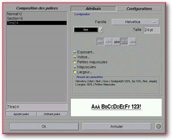
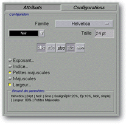
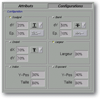

<!-- Documentation XQuad (c)1995-2000 AXENE contact axene@axene.org>
<html>

<head>
<title>Dialog Box: Font Composition</title>
</head>

<body BGCOLOR="#FFFFFF" BACKGROUND="Images/back.gif" TEXT="#000000">

<p ALIGN="right">  </p>

<p><br>
<br>
This dialog box defines font styles used in text display. It associates a name with a
text-style as defined by specific parameters. <br>
<br>
</p>

<hr>

<p align="center"><br>
<i><small>Screen shot: Fonts dialog box</small></i> <br>
<br>
<br>
</p>

<hr>

<p><br>
</p>

<h3>Left Portion of the Dialog Box</h3>

<ul>
  <li><a NAME="style_list">The<strong> font list</strong> displays pre-defined styles. When a
    font is selected from the list, its characteristics appear on the right. Several fonts may
    be selected at once by using the CNTRL key. Pre-defined styles are stored in the </a><a HREF="ConfigStyle.html">Configuration Files</a>.<br>
    &nbsp;</li>
  <li><a NAME="style_name">The text field beneath the list <strong>modifies the name</strong>
    of a selected style.</a><br>
    &nbsp;</li>
  <li><a NAME="new_style">The <i>New Font </i>button <strong>creates a new font</strong>. By
    default it will have the same characteristics as the selected font, as well as the same
    name followed by a number.</a><br>
    &nbsp;</li>
  <li><a NAME="delete_style">The <i>Delete Font</i> button <strong>deletes a font</strong>. A
    font used in the application or defined with the </a><a HREF="ConfigStyle.html#lock">\LOCK</a>
    command in the <a HREF="ConfigStyle.html">Configuration Files</a> cannot be deleted. <br>
    &nbsp;</li>
</ul>

<p><br>
</p>

<h3>Right Portion of the Dialog Box: </h3>

<ul>
  <li><a NAME="button_bar">The <i>Features</i> and <i>Configuration</i> buttons <strong>change
    the contents of the <i>Configuration</i> section</strong>. If the <i>Features</i> button
    is selected, basic stylistic features may be chosen, such as underlining, shadowing, etc.
    The <i>Configuration</i> button changes font parameters in detail.</a><br>
    &nbsp;</li>
  <li><a NAME="configuration_section">The <i>Configuration</i> section may take on two forms:</a>
    <br>
    &nbsp; <ul>
      <li><a HREF="Box_Font.html#general_attributes">General font features, if the <i>Features</i>
        button is engaged.</a><br>
        &nbsp;</li>
      <li><a HREF="Box_Font.html#detailed_configuration">Detailed feature configuration, if the <i>Configuration</i>
        button is engaged.</a><br>
        &nbsp;</li>
    </ul>
  </li>
</ul>

<ul>
  <li><a NAME="preview_area">The preview area instantly displays the appearance of a font in
    its current configuration.</a><br>
    &nbsp;<br>
  </li>
</ul>

<h3>Lower Portion of the Dialog Box:</h3>

<ul>
  <li><a NAME="button_ok"><i>OK</i> <strong>accepts all modifications</strong> carried out
    upon the list and closes the box. Texts utilizing modified styles will be updated
    automatically.</a><br>
    &nbsp;</li>
  <li><a NAME="button_cancel"><i>Cancel</i> <strong>cancels all operations</strong> to the
    list and closes the box.</a><br>
    &nbsp;</li>
</ul>

<p><br>
</p>

<hr>

<h2 align="center"><a NAME="general_attributes">Configuration Section: General features<br>
</a></h2>

<p align="center"><br>
<i><small>Screen shot: General configuration</small></i></p>

<p><br>
</p>

<h3>In this format the Configuration Section is composed, from top to bottom, by:</h3>

<ul>
  <li><a NAME="font_list">The pulldown <i>Font Family</i> menu <strong>selects font type</strong>.
    This list is kept in the </a><a HREF="ConfigFont.html">Configuration files.</a><br>
    &nbsp;</li>
  <li><a NAME="font_color_list">The Color List <strong>selects the font color</strong>. The
    Color list is defined in the </a><a HREF="Box_Color.html">Color Preparation</a> dialog
    box.<br>
    &nbsp;</li>
  <li><a NAME="font_size_textfield">The <i>Size</i> text field <strong>defines font size</strong>.
    This measure corresponds to the font's height and is expressed in typographic points
    between 1 and 1000 pts.</a><br>
    &nbsp;</li>
  <li><a NAME="font_icon_bar">The horizontal toolbar <strong>changes font features</strong>.
    Toolbar buttons are as follows:</a> <br>
    &nbsp; <ul>
      <li> <a NAME="icon_bold">The first button <strong>produces bold
        features</strong>. If the selected font family does not support bold print, this button is
        grey.</a><br>
        &nbsp;</li>
      <li> <a NAME="icon_italic">The second button <strong>produces
        italic features</strong>. If the selected font family does not support italic print, this
        button is grey. </a><br>
        &nbsp;</li>
      <li> <a NAME="icon_shadow">The third button <strong>produces
        a shadow feature</strong>. The user may extensively modify the shadow's configuration from
        the </a><a HREF="Box_Font.html#shadow_section"><i>Detailed Configuration</i> section</a>.<br>
        &nbsp;</li>
      <li> <a NAME="icon_underline">The fourth button <strong>produces
        an underline feature</strong>. The user may extensively modify the underline's
        configuration from the </a><a HREF="Box_Font.html#underline_section"><i>Detailed
        Configuration</i> section</a>.<br>
        &nbsp;</li>
      <li> <a NAME="icon_strikeout">The last button <strong>produces
        a strike-through feature</strong>. The user may extensively modify the
        strike-through&amp;'s configuration from the </a><a HREF="Box_Font.html#strikeout_section"><i>Detailed
        Configuration</i> section</a>.<br>
        &nbsp; </li>
    </ul>
  </li>
  <li><a NAME="button_superscript">The <i>Exponent</i> button <strong>produces superscript
    features</strong>. The <i>Exponent</i> and <i>Index</i> features are mutually exclusive.
    The user may extensively modify exponent configuration from the </a><a HREF="Box_Font.html#superscript_section"><i>Detailed Configuration</i> section</a>.<br>
    &nbsp;</li>
  <li><a NAME="button_subscript">The <i>Index</i> button <strong>produces subscript features</strong>.
    The <i>Exponent</i> and <i>Index</i> features are mutually exclusive. The user may
    extensively modify the index configuration from the </a><a HREF="Box_Font.html#subscript_section"><i>Detailed Configuration</i> section</a>.<br>
    &nbsp;</li>
  <li><a NAME="button_smallcaps">The <i>Small Caps</i> button <strong>changes lowercase
    letters to small caps</strong>. The small caps appear like regular capital letters except
    they retain their original small size. The <i>Small caps</i> and <i>uppercase</i> features
    are mutually exclusive.</a><br>
    &nbsp;</li>
  <li><a NAME="button_bigcaps">The<i> Uppercase</i> button <strong>changes lower case letters
    to uppercase letters</strong>. The <i>Small caps</i> and <i>uppercase</i> features are
    mutually exclusive. </a><br>
    &nbsp;</li>
  <li><a NAME="button_width">The <i>Width</i> button <strong>enlarges or narrows font width</strong>.
    The horizontal expansion factor may be selected from the </a><a HREF="Box_Font.html#width_section"><i>Detailed Configuration</i> section.</a><br>
    &nbsp;</li>
  <li><a NAME="summary_section">The <i>Summary of Parameters</i> section</a> displays a
    synthesis of the selected font's characteristics and features.<br>
    &nbsp;</li>
</ul>

<p><br>
</p>

<hr>

<h2 align="center"><a NAME="detailed_configuration">Configuration Section: Detailed
Configuration</a></h2>

<p align="center"><br>
<small><i>Screen shot: Detailed configuration</i></small></p>

<p><br>
</p>

<p>The <i>Configuration</i> section in this format allows the user to fine-tune the
configuration of various selected features. This section is divided into six sub-sections,
one for each feature. Each of these sub-sections contains a button in front of the
feature's name. When modifying a value in one of these sub-sections, its button selects
itself automatically in order that the user be able to view changes in the preview area.</p>

<p>Several of these parameters relate to a particular fraction of font height. (the space
between the baseline and the top line of a font.)</p>

<p align="center"> </p>

<h3>The Configuration section is composed of:</h3>

<ul>
  <li><a NAME="underline_section">The <i>Underline</i> section is made up of:</a><br>
    &nbsp; <ul>
      <li>A text field <i>dY</i> <strong>selects the position of the underline bar</strong>. This
        value is expressed as a percentage of the font height and will be between 0 and 100%. A 0%
        value corresponds to an underline bar at the baseline.<br>
        &nbsp;</li>
      <li>A<i> Color List</i> <strong>selects the color of the underline</strong>.<br>
        &nbsp;</li>
      <li>The <i>Ep</i> text field <strong>selects the thickness of the bar</strong>. This value
        is expressed as a percentage of the font height and must be between 1% and 20%.<br>
        &nbsp;</li>
      <li>The list of line styles <strong>selects the underline bar's design</strong>. It contains
        a combination of simple, double or triple underlines or spaces.<br>
        &nbsp;</li>
    </ul>
  </li>
  <a NAME="width_section">
</ul>

<ul>
  </a>
  <li><a NAME="strikeout_section">The <i>Strike-through</i> section is made up of:</a><br>
    &nbsp; <ul>
      <li>The <i>dY</i> text field <strong>selects the position of the bar</strong>. This value is
        expressed as a percentage of the font height and must be between 0% and 100%. A 0% value
        corresponds to a strike-through at the baseline, a 100% corresponds to a strike-through at
        the top-line.<br>
        &nbsp;</li>
      <li>The <i>Color List</i> <strong>selects the color of the bar</strong>.<br>
        &nbsp;</li>
      <li>The <i>Ep</i> text field <strong>selects the thickness of the bar</strong>. The value is
        expressed as a percentage of the font height and must be set between 1% and 20%.<br>
        &nbsp;</li>
      <li>The list of line styles <strong>selects the strikethrough bar's design</strong>. It
        contains a combination of simple, double, or triple bars or spaces.<br>
        &nbsp;</li>
    </ul>
  </li>
  <a NAME="width_section">
</ul>

<ul>
  </a>
  <li><a NAME="shadow_section">The <i>Shadowed</i> section is made up of:</a><br>
    &nbsp; <ul>
      <li>The <i>dX</i> text field <strong>selects the horizontal differential from the shadow</strong>.
        This value is expressed as a fraction of the font height, in percentage form between -50%
        and 50%. A 0% value corresponds to no differential. A negative value corresponds to a
        shadow leaning towards the height, and a positive value corresponds to a shadow leaning
        towards the bottom.<br>
        &nbsp;</li>
      <li>The <i>dY</i> text field <strong>selects the shadow's vertical differentia</strong>l.
        This value is expressed as a fraction of the font height, in percentage form between -50%
        and 50%. A 0% value corresponds to no differential. A negative value corresponds to a
        shadow leaning towards the top and a positive value corresponds to a shadow leaning
        towards the bottom. <br>
        &nbsp;</li>
      <li>The <i>Color List</i> <strong>selects the color of the bar</strong>.</li>
    </ul>
    <p>&nbsp;</p>
  </li>
  <li><a NAME="width_section">The <i>Width</i> text field defines the horizontal expansion
    factor. This factor is expressed as a percentage and must be between 1% and 1000%. If the
    value is 100%, the font is normal size. If the value is 50%, the font is half as wide as
    normal, and if the value is 200% the font is twice normal size.<br>
  </li>
</ul>

<ul>
  <li></a><a NAME="subscript_section">The <i>Index</i> section is made up of:</a><br>
    &nbsp; <ul>
      <li>The <i>Y-pos</i> text field <strong>selects the differential towards the bottom of the
        font</strong>. This value is expressed as a fraction of font height, in percentage form
        between 0% and 100%. A 0% value corresponds to no differential, and a 50% value
        corresponds to a differential towards the bottom of the baseline from halfway up the
        height of the font.<br>
        &nbsp;</li>
      <li>The <i>Size</i> text field <strong>selects the reduction factor of the font</strong>.
        This value corresponds to a fraction of the normal font size, expressed as a percentage
        between 10% and 100%. A 100% value corresponds to no reduction and a 50% value for a 12 pt
        font corresponds to a 6 pt font size for the index feature.</li>
    </ul>
    <p>&nbsp;</p>
  </li>
  <li><a NAME="superscript_section">The <i>Exponent</i> section is made up of:</a><br>
    &nbsp; <ul>
      <li>The <i>Y-pos</i> text field <strong>selects the differential towards the top of the font</strong>.
        This value is expressed as a fraction of font height, in percentage form between 0% and
        100%. A 0% value corresponds to no differential, and a 50% value corresponds to a
        differential towards the top of the baseline from halfway up the font height.<br>
        &nbsp;</li>
      <li>The <i>Size</i> text field <strong>selects the font reduction factor</strong>. This
        value corresponds to a fraction of the normal font size, expressed in percentage form
        between 10% and 100%. A 100% value corresponds to no font reduction, and a 50% value for a
        12 pt. font corresponds to a 6 pt. font size for the exponent features.<br>
        &nbsp;</li>
    </ul>
  </li>
</ul>

<hr>

<p ALIGN="right"> </p>
</body>
</html>
